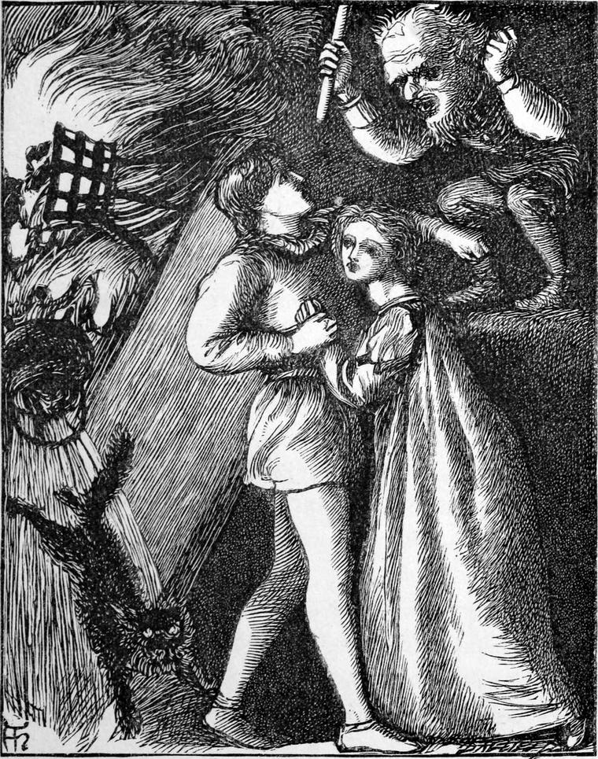

by George MacDonald
Cross Purposes
Chapter I
Once upon a time, the Queen of Fairyland, finding her own subjects far too well-behaved to be amusing, took a sudden longing to have a mortal or two at her Court. So, after looking about her for some time, she fixed upon two to bring to Fairyland.
But how were they to be brought?
"I will bring the girl."
The speaker, whose name was Peaseblossom, after her great-great-grandmother, looked so graceful, and hung her head so apologetically, that the Queen said at once,—
"How will you manage it, Peaseblossom?"
"I will open the road before her, and close it behind her."
"I have heard that you have pretty ways of doing things; so you may try."
The court happened to be held in an open forest-glade of smooth turf, upon which there was just one mole-heap. As soon as the Queen had given her permission to Peaseblossom, up through the mole-heap came the head of a goblin, which cried out,—
"Please your majesty, I will bring the boy."
"You!" exclaimed the Queen. "How will you do it?"
The goblin began to wriggle himself out of the earth, as if he had been a snake, and the whole world his skin, till the court was convulsed with laughter. As soon as he got free, he began to roll over and over, in every possible manner, rotatory and cylindrical, all at once, until he reached the wood. The courtiers followed, holding their sides, so that the Queen was left sitting upon her throne in solitary state.
When they reached the wood, the goblin, whose name was Toadstool, was nowhere to be seen. While they were looking for him, out popped his head from the mole-heap again, with the words,—
"So, your majesty."
"You have taken your own time to answer," said the Queen, laughing.
"And my own way too, eh! your majesty?" rejoined Toadstool, grinning.
"No doubt. Well, you may try."
And the goblin, making as much of a bow as he could with only half his neck above ground, disappeared under it.
Chapter II
No mortal, or fairy either, can tell where Fairyland begins and where it ends. But somewhere on the borders of Fairyland there was a nice country village, in which lived some nice country people.
Alice was the daughter of the squire, a pretty, good-natured girl, whom her friends called fairy-like, and others called silly.
One rosy summer evening, when the wall opposite her window was flaked all over with rosiness, she threw herself down on her bed, and lay gazing at the wall. The rose-colour sank through her eyes and dyed her brain, and she began to feel as if she were reading a story-book. She thought she was looking at a western sea, with the waves all red with sunset. But when the colour died out, Alice gave a sigh to see how commonplace the wall grew. "I wish it was always sunset!" she said, half aloud. "I don't like gray things."
"I will take you where the sun is always setting, if you like, Alice," said a sweet, tiny voice near her. She looked down on the coverlet of the bed, and there, looking up at her, stood a lovely little creature. It seemed quite natural that the little lady should be there; for many things we never could believe, have only to happen, and then there is nothing strange about them. She was dressed in white, with a cloak of sunset-red—the colours of the sweetest of sweet-peas. On her head was a crown of twisted tendrils, with a little gold beetle in front.
"Are you a fairy?" said Alice.
"Yes. Will you go with me to the sunset?"
"Yes, I will."
When Alice proceeded to rise, she found that she was no bigger than the fairy; and when she stood up on the counterpane, the bed looked like a great hall with a painted ceiling. As she walked towards Peaseblossom, she stumbled several times over the tufts that made the pattern. But the fairy took her by the hand and led her towards the foot of the bed. Long before they reached it, however, Alice saw that the fairy was a tall, slender lady, and that she herself was quite her own size. What she had taken for tufts on the counterpane were really bushes of furze, and broom, and heather, on the side of a slope.
"Where are we?" asked Alice.
"Going on," answered the fairy.
Alice, not liking the reply, said,—
"I want to go home."
"Good-bye, then!" answered the fairy.
Alice looked round. A wide, hilly country lay all about them. She could not even tell from what quarter they had come.
"I must go with you, I see," she said.
Before they reached the bottom, they were walking over the loveliest meadow-grass. A little stream went cantering down beside them, without channel or bank, sometimes running between the blades, sometimes sweeping the grass all one way under it. And it made a great babbling for such a little stream and such a smooth course.
Gradually the slope grew gentler, and the stream flowed more softly and spread out wider. At length they came to a wood of long, straight poplars, growing out of the water, for the stream ran into the wood, and there stretched out into a lake. Alice thought they could go no farther; but Peaseblossom led her straight on, and they walked through.
It was now dark; but everything under the water gave out a pale, quiet light. There were deep pools here and there, but there was no mud, or frogs, or water-lizards, or eels. All the bottom was pure, lovely grass, brilliantly green. Down the banks of the pools she saw, all under water, primroses and violets and pimpernels. Any flower she wished to see she had only to look for, and she was sure to find it. When a pool came in their way, the fairy swam, and Alice swam by her; and when they got out they were quite dry, though the water was as delightfully wet as water should be. Besides the trees, tall, splendid lilies grew out of it, and hollyhocks and irises and sword-plants, and many other long-stemmed flowers. From every leaf and petal of these, from every branch-tip and tendril, dropped bright water. It gathered slowly at each point, but the points were so many that there was a constant musical plashing of diamond rain upon the still surface of the lake. As they went on, the moon rose and threw a pale mist of light over the whole, and the diamond drops turned to half-liquid pearls, and round every tree-top was a halo of moonlight, and the water went to sleep, and the flowers began to dream.
"Look," said the fairy; "those lilies are just dreaming themselves into a child's sleep. I can see them smiling. This is the place out of which go the things that appear to children every night."
"Is this dreamland, then?" asked Alice.
"If you like," answered the fairy.
"How far am I from home?"
"The farther you go, the nearer home you are."
Then the fairy lady gathered a bundle of poppies and gave it to Alice. The next deep pool that they came to, she told her to throw it in. Alice did so, and following it, laid her head upon it. That moment she began to sink. Down and down she went, till at last she felt herself lying on the long, thick grass at the bottom of the pool, with the poppies under her head and the clear water high over it. Up through it she saw the moon, whose bright face looked sleepy too, disturbed only by the little ripples of the rain from the tall flowers on the edges of the pool.
She fell fast asleep, and all night dreamed about home.
Chapter III
Richard—which is name enough for a fairy story—was the son of a widow in Alice's village. He was so poor that he did not find himself generally welcome; so he hardly went anywhere, but read books at home, and waited upon his mother. His manners, therefore, were shy, and sufficiently awkward to give an unfavourable impression to those who looked at outsides. Alice would have despised him; but he never came near enough for that.
Now Richard had been saving up his few pence in order to buy an umbrella for his mother; for the winter would come, and the one she had was almost torn to ribands. One bright summer evening, when he thought umbrellas must be cheap, he was walking across the market-place to buy one: there, in the middle of it, stood an odd-looking little man, actually selling umbrellas. Here was a chance for him! When he drew nearer, he found that the little man, while vaunting his umbrellas to the skies, was asking such absurdly small prices for them, that no one would venture to buy one. He had opened and laid them all out at full stretch on the market-place—about five-and-twenty of them, stick downwards, like little tents—and he stood beside, haranguing the people. But he would not allow one of the crowd to touch his umbrellas. As soon as his eye fell upon Richard, he changed his tone, and said, "Well, as nobody seems inclined to buy, I think, my dear umbrellas, we had better be going home." Whereupon the umbrellas got up, with some difficulty, and began hobbling away. The people stared at each other with open mouths, for they saw that what they had taken for a lot of umbrellas, was in reality a flock of black geese. A great turkey-cock went gobbling behind them, driving them all down a lane towards the forest. Richard thought with himself, "There is more in this than I can account for. But an umbrella that could lay eggs would be a very jolly umbrella." So by the time the people were beginning to laugh at each other, Richard was half-way down the lane at the heels of the geese. There he stooped and caught one of them, but instead of a goose he had a huge hedgehog in his hands, which he dropped in dismay; whereupon it waddled away a goose as before, and the whole of them began cackling and hissing in a way that he could not mistake. For the turkey-cock, he gobbled and gabbled and choked himself and got right again in the most ridiculous manner. In fact, he seemed sometimes to forget that he was a turkey, and laughed like a fool. All at once, with a simultaneous long-necked hiss, they flew into the wood, and the turkey after them. But Richard soon got up with them again, and found them all hanging by their feet from the trees, in two rows, one on each side of the path, while the turkey was walking on. Him Richard followed; but the moment he reached the middle of the suspended geese, from every side arose the most frightful hisses, and their necks grew longer and longer, till there were nearly thirty broad bills close to his head, blowing in his face, in his ears, and at the back of his neck. But the turkey, looking round and seeing what was going on, turned and walked back. When he reached the place, he looked up at the first and gobbled at him in the wildest manner. That goose grew silent and dropped from the tree. Then he went to the next, and the next, and so on, till he had gobbled them all off the trees, one after another. But when Richard expected to see them go after the turkey, there was nothing there but a flock of huge mushrooms and puff-balls.

"I have had enough of this," thought Richard. "I will go home again."
"Go home, Richard," said a voice close to him.
Looking down, he saw, instead of the turkey, the most comical-looking little man he had ever seen.
"Go home, Master Richard," repeated he, grinning.
"Not for your bidding," answered Richard.
"Come on, then, Master Richard."
"Nor that either, without a good reason."
"I will give you such an umbrella for your mother."
"I don't take presents from strangers."
"Bless you, I'm no stranger here! Oh, no! not at all." And he set off in the manner usual with him, rolling every way at once.
Richard could not help laughing and following. At length Toadstool plumped into a great hole full of water. "Served him right!" thought Richard. "Served him right!" bawled the goblin, crawling out again, and shaking the water from him like a spaniel. "This is the very place I wanted, only I rolled too fast." However, he went on rolling again faster than before, though it was now uphill, till he came to the top of a considerable height, on which grew a number of palm-trees.
"Have you a knife, Richard?" said the goblin, stopping all at once, as if he had been walking quietly along, just like other people.
Richard pulled out a pocket-knife and gave it to the creature, who instantly cut a deep gash in one of the trees. Then he bounded to another and did the same, and so on till he had gashed them all. Richard, following him, saw that a little stream, clearer than the clearest water, began to flow from each, increasing in size the longer it flowed. Before he had reached the last there was quite a tinkling and rustling of the little rills that ran down the stems of the palms. This grew and grew, till Richard saw that a full rivulet was flowing down the side of the hill.
"Here is your knife, Richard," said the goblin; but by the time he had put it in his pocket, the rivulet had grown to a small torrent.
"Now, Richard, come along," said Toadstool, and threw himself into the torrent.
"I would rather have a boat," returned Richard.
"Oh, you stupid!" cried Toadstool crawling up the side of the hill, down which the stream had already carried him some distance.
With every contortion that labour and difficulty could suggest, yet with incredible rapidity, he crawled to the very top of one of the trees, and tore down a huge leaf, which he threw on the ground, and himself after it, rebounding like a ball. He then laid the leaf on the water, held it by the stem, and told Richard to get upon it. He did so. It went down deep in the middle with his weight. Toadstool let it go, and it shot down the stream like an arrow. This began the strangest and most delightful voyage. The stream rushed careering and curveting down the hill-side, bright as a diamond, and soon reached a meadow plain. The goblin rolled alongside of the boat like a bundle of weeds; but Richard rode in triumph through the low grassy country upon the back of his watery steed. It went straight as an arrow, and, strange to tell, was heaped up on the ground, like a ridge of water or a wave, only rushing on endways. It needed no channel, and turned aside for no opposition. It flowed over everything that crossed its path, like a great serpent of water, with folds fitting into all the ups and downs of the way. If a wall came in its course it flowed against it, heaping itself up on itself till it reached the top, whence it plunged to the foot on the other side, and flowed on. Soon he found that it was running gently up a grassy hill. The waves kept curling back as if the wind blew them, or as if they could hardly keep from running down again. But still the stream mounted and flowed, and the waves with it. It found it difficult, but it could do it. When they reached the top, it bore them across a heathy country, rolling over purple heather, and blue harebells, and delicate ferns, and tall foxgloves crowded with bells purple and white. All the time the palm-leaf curled its edges away from the water, and made a delightful boat for Richard, while Toadstool tumbled along in the stream like a porpoise. At length the water began to run very fast, and went faster and faster, till suddenly it plunged them into a deep lake, with a great splash, and stopped there. Toadstool went out of sight, and came up gasping and grinning, while Richard's boat tossed and heaved like a vessel in a storm at sea; but not a drop of water came in. Then the goblin began to swim, and pushed and tugged the boat along. But the lake was so still, and the motion so pleasant, that Richard fell fast asleep.
Chapter IV
When he woke he found himself still afloat upon the broad palm-leaf. He was alone in the middle of a lake, with flowers and trees growing in and out of it everywhere. The sun was just over the tree-tops. A drip of water from the flowers greeted him with music; the mists were dissolving away, and where the sunlight fell on the lake the water was clear as glass. Casting his eyes downward, he saw, just beneath him, far down at the bottom, Alice drowned, as he thought. He was in the act of plunging in, when he saw her open her eyes, and at the same moment begin to float up. He held out his hand, but she repelled it with disdain, and swimming to a tree, sat down on a low branch, wondering how ever the poor widow's son could have found his way into Fairyland. She did not like it. It was an invasion of privilege.
"How did you come here, young Richard?" she asked, from six yards off.
"A goblin brought me."
"Ah! I thought so. A fairy brought me."
"Where is your fairy?"
"Here I am," said Peaseblossom, rising slowly to the surface just by the tree on which Alice was seated.
"Where is your goblin?" retorted Alice.
"Here I am," bawled Toadstool, rushing out of the water like a salmon, and casting a summersault in the air before he fell in again with a tremendous splash. His head rose again close beside Peaseblossom, who being used to such creatures only laughed.
"Isn't he handsome?" he grinned.
"Yes, very. He wants polishing, though."
"You could do that for yourself, you know. Shall we change?"
"I don't mind. You'll find her rather silly."
"That's nothing. The boy's too sensible for me."
He dived, and rose at Alice's feet. She shrieked with terror. The fairy floated away like a water-lily towards Richard. "What a lovely creature!" thought he; but hearing Alice shriek again, he said,
"Don't leave Alice; she's frightened at that queer creature.—I don't think there's any harm in him, though, Alice."
"Oh, no! He won't hurt her," said Peaseblossom. "I'm tired of her. He's going to take her to the court, and I will take you."
"I don't want to go."
"But you must. You can't go home again. You don't know the way."
"Richard! Richard!" cried Alice, in an agony.
Richard sprang from his boat, and was by her side in a moment.
"He pinched me," cried Alice.
Richard hit the goblin a terrible blow on the head; but it took no more effect upon him than if his head had been a round ball of india-rubber. He gave Richard a furious look, however, and bawling out, "You'll repent that, Dick!" vanished under the water.
"Come along, Richard; make haste; he will murder you," cried the fairy.
"It is all your fault," said Richard. "I won't leave Alice."
Then the fairy saw it was all over with her and Toadstool; for they can do nothing with mortals against their will. So she floated away across the water in Richard's boat, holding her robe for a sail, and vanished, leaving the two alone in the lake.
"You have driven away my fairy!" cried Alice. "I shall never get home now. It is all your fault, you naughty young man."
"I drove away the goblin," remonstrated Richard.
"Will you please to sit on the other side of the tree? I wonder what my papa would say if he saw me talking to you!"
"Will you come to the next tree, Alice?" said Richard, after a pause.
Alice, who had been crying all the time that Richard was thinking, said "I won't." Richard, therefore, plunged into the water without her, and swam for the tree. Before he had got half-way, however, he heard Alice crying "Richard! Richard!" This was just what he wanted. So he turned back, and Alice threw herself into the water. With Richard's help she swam pretty well, and they reached the tree. "Now for the next!" said Richard; and they swam to the next, and then to the third. Every tree they reached was larger than the last, and every tree before them was larger still. So they swam from tree to tree, till they came to one that was so large that they could not see round it. What was to be done? Clearly to climb this tree. It was a dreadful prospect for Alice, but Richard proceeded to climb; and by putting her feet where he put his, and now and then getting hold of his ankle, she managed to make her way up. There were a great many stumps where branches had withered off, and the bark was nearly as rough as a hill-side, so there was plenty of foothold for them. When they had climbed a long time, and were getting very tired indeed, Alice cried out, "Richard, I shall drop—I shall. Why did you come this way?" And she began once more to cry. But at that moment Richard caught hold of a branch above his head, and reaching down his other hand got hold of Alice, and held her till she had recovered a little. In a few moments more they reached the fork of the tree, and there they sat and rested. "This is capital!" said Richard, cheerily.
"What is?" asked Alice, sulkily.
I'm tired."
"You selfish creature!" said Alice. "If you are tired, what must I be!"
"Tired too," answered Richard. "But we've got on bravely. And look! what's that?"
By this time the day was gone, and the night so near, that in the shadows of the tree all was dusky and dim. But there was still light enough to discover that in a niche of the tree sat a huge horned owl, with green spectacles on his beak, and a book in one foot. He took no heed of the intruders, but kept muttering to himself. And what do you think the owl was saying? I will tell you. He was talking about the book that he held upside down in his foot.
Stupid ass-s-s-s! Says owls can't read! I can read backwards!"
"I think that is the goblin again," said Richard, in a whisper. "However, if you ask a plain question, he must give you a plain answer, for they are not allowed to tell downright lies in Fairyland."
"Don't ask him, Richard; you know you gave him a dreadful blow."
"I gave him what he deserved, and he owes me the same.—Hallo! which is the way out?"
He wouldn't say if you please, because then it would not have been a plain question.
"Down-stairs," hissed the owl, without ever lifting his eyes from the book, which all the time he read upside down, so learned was he.
"On your honour, as a respectable old owl?" asked Richard.
"No," hissed the owl; and Richard was almost sure that he was not really an owl. So he stood staring at him for a few moments, when all at once, without lifting his eyes from the book, the owl said, "I will sing a song," and began:—
When they're all in bed, I sit up to see
I'm a better student than students all,
For I never read till the darkness fall;
And I never read without my glasses,
And that is how my wisdom passes.
Howlowlwhoolhoolwoolool.
I see the dreams that he has in his hat;
I see him snorting them out as he goes—
Out at his stupid old trumpet-nose.
Ten thousand things that you couldn't think
I write them down with pen and ink.
Howlowlwhooloolwhitit that's wit.
No one else sees the lady-moon sit
On the sea, her nest, all night, but the owl,
Hatching the boats and the long-legged fowl.
When the oysters gape to sing by rote,
She crams a pearl down each stupid throat.
Howlowlwhitit that's wit, there's a fowl!"
And so singing, he threw the book in Richard's face, spread out his great, silent, soft wings, and sped away into the depths of the tree. When the book struck Richard, he found that it was only a lump of wet moss.
While talking to the owl he had spied a hollow behind one of the branches. Judging this to be the way the owl meant, he went to see, and found a rude, ill-defined staircase going down into the very heart of the trunk. But so large was the tree that this could not have hurt it in the least. Down this stair, then, Richard scrambled as best he could, followed by Alice—not of her own will, she gave him clearly to understand, but because she could do no better. Down, down they went, slipping and falling sometimes, but never very far, because the stair went round and round. It caught Richard when he slipped, and he caught Alice when she did. They had begun to fear that there was no end to the stair, it went round and round so steadily, when, creeping through a crack, they found themselves in a great hall, supported by thousands of pillars of gray stone. Where the little light came from they could not tell. This hall they began to cross in a straight line, hoping to reach one side, and intending to walk along it till they came to some opening. They kept straight by going from pillar to pillar, as they had done before by the trees. Any honest plan will do in Fairyland, if you only stick to it. And no plan will do if you do not stick to it.
It was very silent, and Alice disliked the silence more than the dimness,—so much, indeed, that she longed to hear Richard's voice. But she had always been so cross to him when he had spoken, that he thought it better to let her speak first; and she was too proud to do that. She would not even let him walk alongside of her, but always went slower when he wanted to wait for her; so that at last he strode on alone. And Alice followed. But by degrees the horror of silence grew upon her, and she felt at last as if there was no one in the universe but herself. The hall went on widening around her; their footsteps made no noise; the silence grew so intense that it seemed on the point of taking shape. At last she could bear it no longer. She ran after Richard, got up with him, and laid hold of his arm.
He had been thinking for some time what an obstinate, disagreeable girl Alice was, and wishing he had her safe home to be rid of her, when, feeling a hand, and looking round, he saw that it was the disagreeable girl. She soon began to be companionable after a fashion, for she began to think, putting everything together, that Richard must have been several times in Fairyland before now. "It is very strange," she said to herself; "for he is quite a poor boy, I am sure of that. His arms stick out beyond his jacket like the ribs of his mother's umbrella. And to think of me wandering about Fairyland with him!"
The moment she touched his arm, they saw an arch of blackness before them. They had walked straight to a door—not a very inviting one, for it opened upon an utterly dark passage. Where there was only one door, however, there was no difficulty about choosing. Richard walked straight through it; and from the greater fear of being left behind, Alice faced the lesser fear of going on. In a moment they were in total darkness. Alice clung to Richard's arm, and murmured, almost against her will, "Dear Richard!" It was strange that fear should speak like love; but it was in Fairyland. It was strange, too, that as soon as she spoke thus, Richard should fall in love with her all at once. But what was more curious still was, that, at the same moment, Richard saw her face. In spite of her fear, which had made her pale, she looked very lovely.
"Dear Alice!" said Richard, "how pale you look!"
"How can you tell that, Richard, when all is as black as pitch?"
"I can see your face. It gives out light. Now I see your hands. Now I can see your feet. Yes, I can see every spot where you are going to—No, don't put your foot there. There is an ugly toad just there."
The fact was, that the moment he began to love Alice, his eyes began to send forth light. What he thought came from Alice's face, really came from his eyes. All about her and her path he could see, and every minute saw better; but to his own path he was blind. He could not see his hand when he held it straight before his face, so dark was it. But he could see Alice, and that was better than seeing the way—ever so much.
At length Alice too began to see a face dawning through the darkness. It was Richard's face; but it was far handsomer than when she saw it last. Her eyes had begun to give light too. And she said to herself—"Can it be that I love the poor widow's son?—I suppose that must be it," she answered herself, with a smile; for she was not disgusted with herself at all. Richard saw the smile, and was glad. Her paleness had gone, and a sweet rosiness had taken its place. And now she saw Richard's path as he saw hers, and between the two sights they got on well.
They were now walking on a path betwixt two deep waters, which never moved, shining as black as ebony where the eyelight fell. But they saw ere long that this path kept growing narrower and narrower. At last, to Alice's dismay, the black waters met in front of them.
"What is to be done now, Richard?" she said.
When they fixed their eyes on the water before them, they saw that it was swarming with lizards, and frogs, and black snakes, and all kinds of strange and ugly creatures, especially some that had neither heads, nor tails, nor legs, nor fins, nor feelers, being, in fact, only living lumps. These kept jumping out and in, and sprawling upon the path. Richard thought for a few moments before replying to Alice's question, as, indeed, well he might. But he came to the conclusion that the path could not have gone on for the sake of stopping there; and that it must be a kind of finger that pointed on where it was not allowed to go itself. So he caught up Alice in his strong arms, and jumped into the middle of the horrid swarm. And just as minnows vanish if you throw anything amongst them, just so these wretched creatures vanished, right and left and every way.
He found the water broader than he had expected; and before he got over, he found Alice heavier than he could have believed; but upon a firm, rocky bottom, Richard waded through in safety. When he reached the other side, he found that the bank was a lofty, smooth, perpendicular rock, with some rough steps cut in it. By and by the steps led them right into the rock, and they were in a narrow passage once more, but, this time, leading up. It wound round and round, like the thread of a great screw. At last, Richard knocked his head against something, and could go no farther. The place was close and hot. He put up his hands, and pushed what felt like a warm stone: it moved a little.
"Go down, you brutes!" growled a voice above, quivering with anger. "You'll upset my pot and my cat, and my temper too, if you push that way. Go down!"
Richard knocked very gently, and said: "Please let us out."
"Oh, yes, I dare say! Very fine and soft-spoken! Go down, you goblin brutes! I've had enough of you. I'll scald the hair off your ugly heads if you do that again. Go down, I say!"
Seeing fair speech was of no avail, Richard told Alice to go down a little, out of the way; and, setting his shoulders to one end of the stone, heaved it up; whereupon down came the other end, with a pot, and a fire, and a cat which had been asleep beside it. She frightened Alice dreadfully as she rushed past her, showing nothing but her green lamping eyes.
Richard, peeping up, found that he had turned a hearth-stone upside down. On the edge of the hole stood a little crooked old man, brandishing a mop-stick in a tremendous rage, and hesitating only where to strike him. But Richard put him out of his difficulty by springing up and taking the stick from him. Then, having lifted Alice out, he returned it with a bow, and, heedless of the maledictions of the old man, proceeded to get the stone and the pot up again. For puss, she got out of herself.
Then the old man became a little more friendly, and said: "I beg your pardon, I thought you were goblins. They never will let me alone. But you must allow, it was rather an unusual way of paying a morning call." And the creature bowed conciliatingly.
"It was, indeed," answered Richard. "I wish you had turned the door to us instead of the hearth-stone." For he did not trust the old man. "But," he added, "I hope you will forgive us."
"Oh, certainly, certainly, my dear young people! Use your freedom. But such young people have no business to be out alone. It is against the rules."

"But what is one to do—I mean two to do—when they can't help it?"
"Yes, yes, of course; but now, you know, I must take charge of you. So you sit there, young gentleman; and you sit there, young lady."
He put a chair for one at one side of the hearth, and for the other at the other side, and then drew his chair between them. The cat got upon his hump, and then set up her own. So here was a wall that would let through no moonshine. But although both Richard and Alice were very much amused, they did not like to be parted in this peremptory manner. Still they thought it better not to anger the old man any more—in his own house, too.
But he had been once angered, and that was once too often, for he had made it a rule never to forgive without taking it out in humiliation.
It was so disagreeable to have him sitting there between them, that they felt as if they were far asunder. In order to get the better of the fancy, they wanted to hold each other's hand behind the dwarf's back. But the moment their hands began to approach, the back of the cat began to grow long, and its hump to grow high; and, in a moment more, Richard found himself crawling wearily up a steep hill, whose ridge rose against the stars, while a cold wind blew drearily over it. Not a habitation was in sight; and Alice had vanished from his eyes. He felt, however, that she must be somewhere on the other side, and so climbed and climbed to get over the brow of the hill, and down to where he thought she must be. But the longer he climbed, the farther off the top of the hill seemed; till at last he sank quite exhausted, and—must I confess it?—very nearly began to cry. To think of being separated from Alice all at once, and in such a disagreeable way! But he fell a-thinking instead, and soon said to himself: "This must be some trick of that wretched old man. Either this mountain is a cat or it is not. If it is a mountain, this won't hurt it; if it is a cat, I hope it will." With that, he pulled out his pocket-knife, and feeling for a soft place, drove it at one blow up to the handle in the side of the mountain.
A terrific shriek was the first result; and the second, that Alice and he sat looking at each other across the old man's hump, from which the cat-a-mountain had vanished. Their host sat staring at the blank fireplace, without ever turning round, pretending to know nothing of what had taken place.
"Come along, Alice," said Richard, rising. "This won't do. We won't stop here."
Alice rose at once, and put her hand in his. They walked towards the door. The old man took no notice of them. The moon was shining brightly through the window; but instead of stepping out into the moonlight when they opened the door, they stepped into a great beautiful hall, through the high gothic windows of which the same moon was shining. Out of this hall they could find no way, except by a staircase of stone which led upwards. They ascended it together. At the top Alice let go Richard's hand to peep into a little room, which looked all the colours of the rainbow, just like the inside of a diamond. Richard went a step or two along a corridor, but finding she had left him, turned and looked into the chamber. He could see her nowhere. The room was full of doors; and she must have mistaken the door. He heard her voice calling him, and hurried in the direction of the sound. But he could see nothing of her. "More tricks," he said to himself. "It is of no use to stab this one. I must wait till I see what can be done." Still he heard Alice calling him, and still he followed, as well as he could. At length he came to a doorway, open to the air, through which the moonlight fell. But when he reached it, he found that it was high up in the side of a tower, the wall of which went straight down from his feet, without stair or descent of any kind. Again he heard Alice call him, and lifting his eyes, saw her, across a wide castle-court, standing at another door just like the one he was at, with the moon shining full upon her.
"All right, Alice!" he cried. "Can you hear me?"
"Yes," answered she.
"Then listen. This is all a trick. It is all a lie of that old wretch in the kitchen. Just reach out your hand, Alice dear."
Alice did as Richard asked her; and, although they saw each other many yards off across the court, their hands met.
"There! I thought so!" exclaimed Richard triumphantly. "Now, Alice, I don't believe it is more than a foot or two down to the court below, though it looks like a hundred feet. Keep fast hold of my hand, and jump when I count three." But Alice drew her hand from him in sudden dismay; whereupon Richard said, "Well, I will try first," and jumped. The same moment his cheery laugh came to Alice's ears, and she saw him standing safe on the ground, far below.
"Jump, dear Alice, and I will catch you," said he.
"I can't; I am afraid," answered she.
"The old man is somewhere near you. You had better jump," said Richard.
Alice sprang from the wall in terror, and only fell a foot or two into Richard's arms. The moment she touched the ground, they found themselves outside the door of a little cottage which they knew very well, for it was only just within the wood that bordered on their village. Hand in hand they ran home as fast as they could. When they reached a little gate that led into her father's grounds, Richard bade Alice good-bye. The tears came in her eyes. Richard and she seemed to have grown quite man and woman in Fairyland, and they did not want to part now. But they felt that they must. So Alice ran in the back way, and reached her own room before anyone had missed her. Indeed, the last of the red had not quite faded from the west.
As Richard crossed the market-place on his way home, he saw an umbrella-man just selling the last of his umbrellas. He thought the man gave him a queer look as he passed, and felt very much inclined to punch his head. But remembering how useless it had been to punch the goblin's head, he thought it better not.
In reward of their courage, the Fairy Queen sent them permission to visit Fairyland as often as they pleased; and no goblin or fairy was allowed to interfere with them.
For Peaseblossom and Toadstool, they were both banished from court, and compelled to live together, for seven years, in an old tree that had just one green leaf upon it.
Toadstool did not mind it much, but Peaseblossom did.